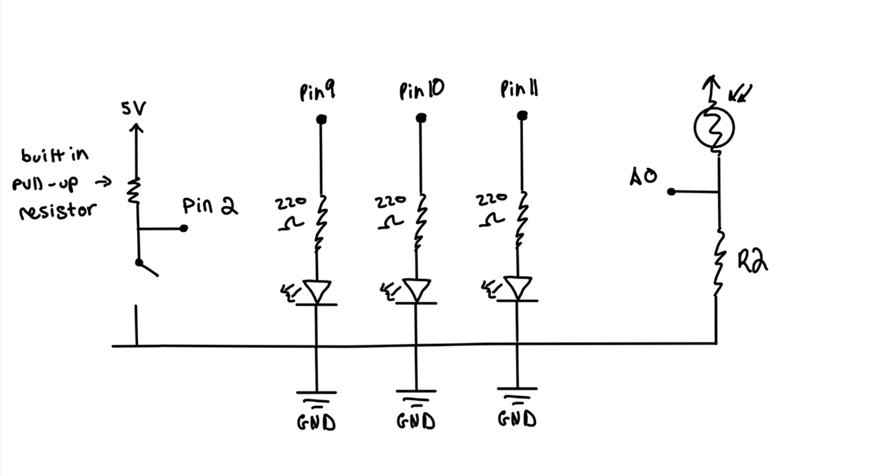
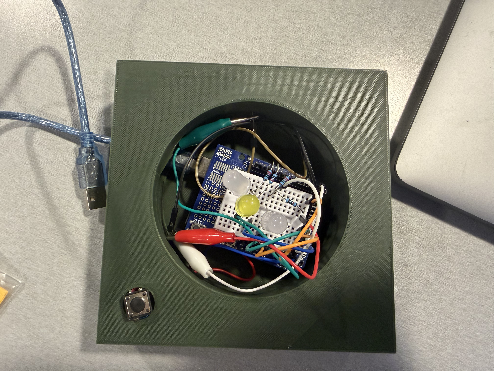
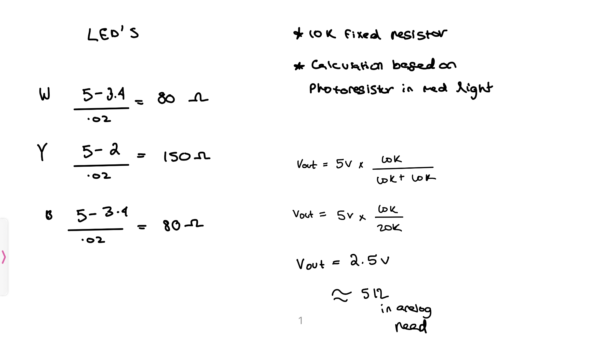

Circuit design and firmware
A closer look at the physical computing layer behind TerraSync, including the circuit architecture, resistor calculations, Arduino logic, and serial communication that connects the lamp to Unity.
One synchronized feedback loop
The Arduino reads ambient light and button input, controls the lamp LEDs, and sends a compact serial message to Unity so the physical and digital environments remain in the same state.
A deliberately small hardware system.
TerraSync uses a minimal set of components: one sensor, one physical control, and three LEDs that work together to create a calm ambient response.
The enclosure was built around a shared, compact circuit.
All components share one ground rail. The button relies on the Arduino’s built-in pull-up resistor, while the photoresistor uses a 10KΩ voltage divider and each LED has an independent current-limiting resistor.

analogWrite().
One standard resistor value simplified the build.
Using R = (Vs − Vf) / I, I calculated the safe resistance for each LED, then selected 220Ω as a shared standard value that kept every LED below its rated current.
| LED | Forward voltage | Target current | Calculated resistance | Chosen resistance |
|---|---|---|---|---|
| White | 3.2 V | 20 mA | ~90 Ω | 220 Ω |
| Yellow | 2.0 V | 20 mA | ~150 Ω | 220 Ω |
| Blue | 3.2 V | 20 mA | ~90 Ω | 220 Ω |
Why 220Ω? It is the nearest common resistor value that safely limits current for all three LED types. Using the same value also reduced wiring complexity without creating a meaningful loss in brightness.

The firmware translates room conditions into synchronized behavior.
Each loop reads the sensor and button state, maps ambient brightness to LED output, and sends a compact serial string that Unity can parse in real time.
/* Valentina Filizola TerraSync — HCDE 439 Final Project */ // Pin definitions const int lightSensorPin = A0; const int buttonPin = 2; // LED pins const int led1 = 9; const int led2 = 10; const int led3 = 11; void setup() { Serial.begin(9600); pinMode(buttonPin, INPUT_PULLUP); pinMode(led1, OUTPUT); pinMode(led2, OUTPUT); pinMode(led3, OUTPUT); } void loop() { int lightValue = analogRead(lightSensorPin); int buttonState = digitalRead(buttonPin); int buttonPressed = (buttonState == LOW) ? 1 : 0; int constrainedLight = constrain(lightValue, 0, 600); // Invert the range so a darker room creates brighter LEDs int brightness = map(constrainedLight, 0, 600, 255, 0); analogWrite(led1, brightness); analogWrite(led2, brightness); analogWrite(led3, brightness); // Unity receives strings such as: "L:512,B:0" Serial.print("L:"); Serial.print(lightValue); Serial.print(",B:"); Serial.println(buttonPressed); delay(20); }
The complete sensing loop responds in real time.
Covering the photoresistor simulates a darker room, causing the LEDs to brighten while the Unity environment shifts into its night state. The button state is transmitted through the same serial stream.